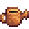
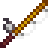

Enxadas
| Imagem | Nome | Custo | Ingredientes | Melhorias |
 |
Enxada | Ferramenta Inicial | ||
 |
Enxada de Cobre | 2 000 ouros | 5x Barra de cobre | Aumenta a alcance máxima 3 blocos, em uma linha a sua frente. |
 |
Enxada de Aço | 5 000 ouros | 5x Barra de ferro | Aumenta o alcance máximo para 5 blocos, em uma linha à sua frente |
 |
Enxada de Ouro | 10 000 ouros | 5x Barra de ouro | Aumenta o alcance máximo para uma área de 3x3 blocos |
 |
Enxada de Irídio | 25 000 ouros | 5x Barra de irídio | Aumenta o alcance máximo para uma área de 3x6 blocos |
Picaretas
| Imagem | Nome | Custo | Ingredientes | Melhorias |
 |
Picareta | Ferramenta Inicial | ||
 |
Picareta de Cobre | 2 000 ouros | 5x Barra de cobre | Pode quebrar pedras grandes na mina (pedras de tamanho 2x2). |
 |
Picareta de Aço | 5 000 ouros | 5x Barra de ferro | Capaz de quebrar os pedregulhos encontrados na fazenda. Capaz de quebrar a barreira dentro da mina, a qual impede o jogador de falar com o Anão. |
 |
Picareta de Ouro | 10 000 ouros | 5x Barra de ouro | Capaz de quebrar meteoritos. Muitas das pedras irão quebrar com poucos acertos, incluindo pequenas pedras que passam a exigir somente 1 acerto. |
 |
Picareta de Irídio | 25 000 ouros | 5x Barra de irídio | A picareta irá utilizar poucos acertos para quebrar pedras, incluindo as presentes na Caverna Caveira. |
Machados
| Imagem | Nome | Custo | Ingredientes | Melhorias |
 |
Machado | Ferramenta Inicial | 10 acertos para derrubar uma árvore, 5 para cortar troncos pequenos. | |
 |
Machado de Cobre | 2 000 ouros | 5x Barra de cobre | Capaz de cortar troncos grandes.São necessários 8 acertos para derrubar árvores e 4 acertos para cortar troncos pequenos. |
 |
Machado de Aço | 5 000 ouros | 5x Barra de ferro | Capaz de cortar grandes torras.São necessários 6 acertos para derrubar árvores e 3 acertos para cortar troncos pequenos. |
 |
Machado de Ouro | 10 000 ouros | 5x Barra de ouro | 4 acertos para derrubar árvores e 2 acertos para cortar troncos pequenos. |
 |
Machado de Irídio | 25 000 ouros | 5x Barra de irídio | 2 acertos para derrubar árvores e 1 acerto para cortar troncos pequenos. |
Regadores
| Imagem | Nome | Custo | Ingredientes | Melhorias |
 |
Regadores | Ferramenta Inicial | Tem uma capacidade de água total de 40 cargas antes de ter de ser reabastecido. | |
|  | Regadores de Cobre | 2 000 ouros | 5x Barra de cobre | Capacidade aumentada para 80 cargas. Aumenta a área máxima de efeito para 3 telhas em uma linha reta. |
 |
Regadores de Aço | 5 000 ouros | 5x Barra de ferro | Capacidade aumentada para 100 cargas. Aumenta a área máxima de efeito para 5 telhas em uma linha reta . |
 |
Regadores de Ouro | 10 000 ouros | 5x Barra de ouro | A capacidade aumentou para 185 cargas. Aumenta a área máxima de efeito para uma área de 3x3 (9 ladrilhos correspondentes). |
 |
Regadores de Irídio | 25 000 ouros | 5x Barra de irídio | Capacidade aumentou para 334 cargas. Aumenta a área máxima de efeito para uma área de 6x3 (18 ladrilhos correspondentes). |
Lixeira
| Imagem | Nome | Custo | Ingredientes | Melhorias |
 |
Lixeira de Cobre | 2 000 ouros | 5x Barra de cobre | Quando deletar um item, consiga 15% do valor de venda original. |
 |
Lixeira de Aço | 5 000 ouros | 5x Barra de ferro | Quando deletar um item, consiga 30% do valor de venda original. |
 |
Lixeira de Ouro | 10 000 ouros | 5x Barra de ouro | Quando deletar um item, consiga 45% do valor de venda original. |
 |
Lixeira de Irídio | 25 000 ouros | 5x Barra de irídio | Quando deletar um item, consiga 60% do valor de venda original. |
Varas de Pesca
| Imagem | Nome | Custo | Melhorias | Localização | Requisitos |
 |
Vara de Treinamento | 25 ouros | Compre da Peixaria do Willy | ||
|  | Vara de bambu | 500 ouros | Dada a você pelo Willy. Compre da Peixaria do Willy | ||
 |
Vara de fibra de vidro | 1 800 ouros | Uso de Iscas. | Compre da Peixaria do Willy. | Nível de Pesca 2 (Quando estiver disponível, o jogador receberá uma carta.) |
 |
Vara de irídio | 7 500 ouros | Uso de Iscas e Anzóis. | Compre da Peixaria do Willy. | Nível de Pesca 6 (Quando estiver disponível, o jogador receberá uma carta.) |
Outras ferramentas
| Imagem | Nome | Custo | Descrição | Localização |
 |
Foice | Ferramenta Inicial | Use para cortar grama e converter em feno (depois de obter o silo, enquanto o silo não estiver cheio). | |
 |
Foice de Ouro | É mais poderoso que uma foice comum. | Encontrada no fim da Mina da pedreira. | |
 |
Balde de leite | 1 000 ouros | Use para coletar leite de cabra ou vaca. | Comprado no Rancho da Marnie. |
 |
Tesoura | 1 000 ouros | Use para coletar lã de ovelha. | Comprado no Rancho da Marnie. |
 |
Aquecedor | 2 000 ouros | Use para manter os animais quentes e felizes durante o inverno. | Comprado no Rancho da Marnie. |
 |
Mochila grande | 2 000 ouros | Desbloqueia a segunda linha do inventário (12 slots adicionais - 24 espaços ao todo). | Comprado da Armazém do Pierre após ter recebido o correio publicitário. |
 |
Mochila de luxo | 10 000 ouros | Desbloqueia a 3ª linha do inventário (12 slots adicionais - 36 espaços ao todo). | Comprado da Armazém do Pierre após ter comprado a mochila tamanho 24. |
| Peneira de cobre | Use para coletar minérios de córregos. | Desbloqueado através da conclusão do Centro Comunitário conjuntos de pesca ou upgrades Joja. | ||
 |
Auto-Recolhedora | 25 000 ouros | Faz a colheita de animais automaticamente todas as manhãs. Trabalha em vacas, ovelhas e cabras. | Desbloqueado depois de atingir o Cultivo Nível 10, o jogador receberá uma carta no correio de Marnie. |